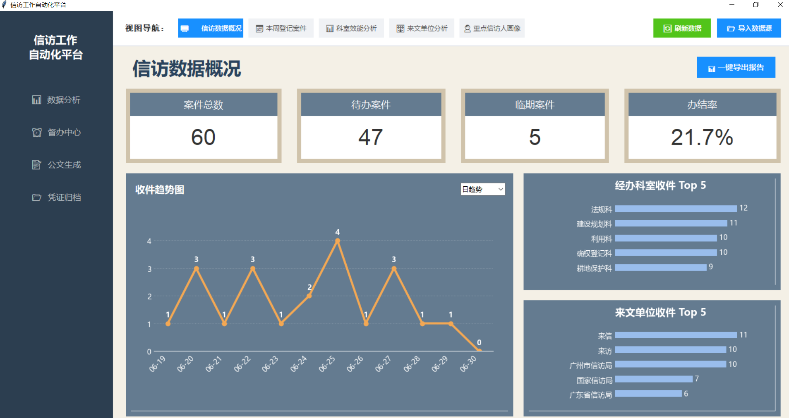
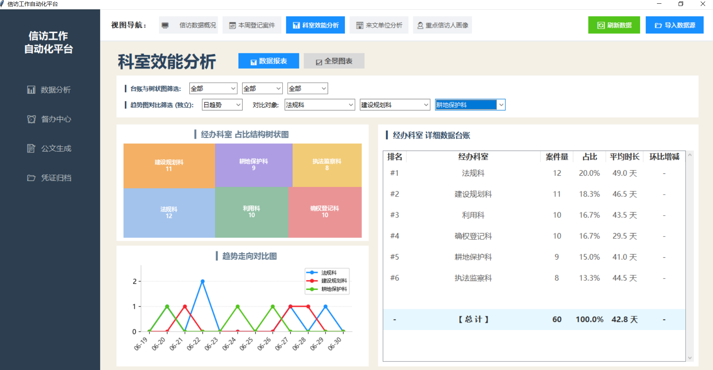
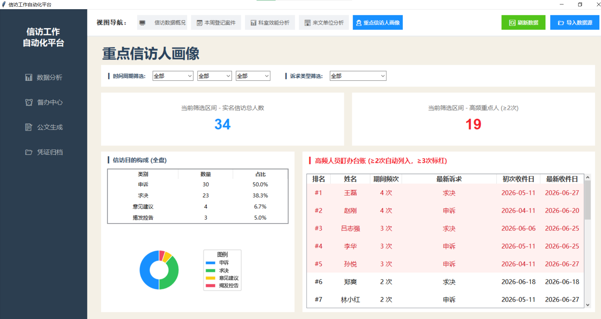
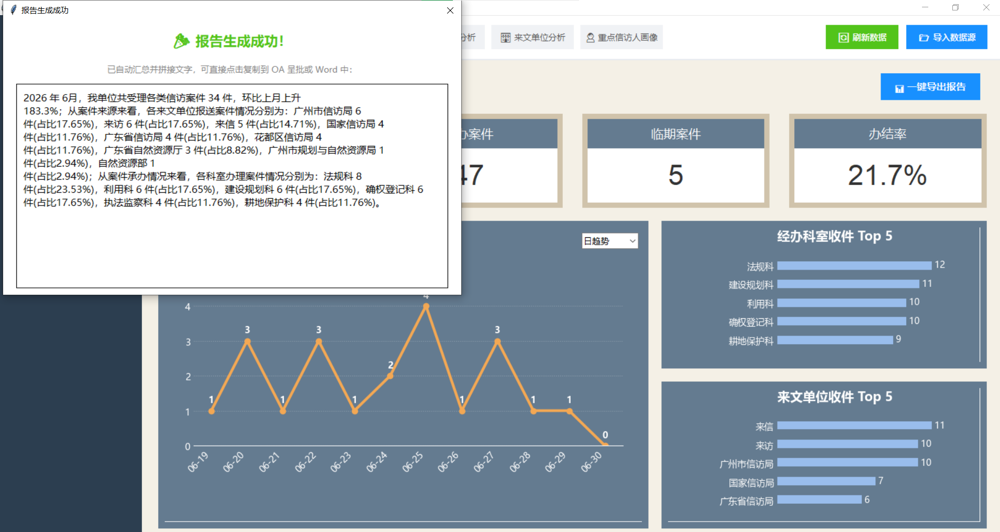
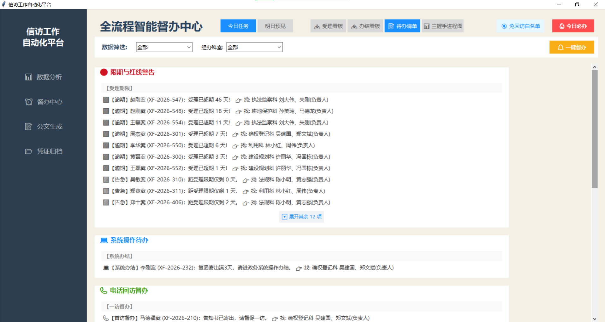
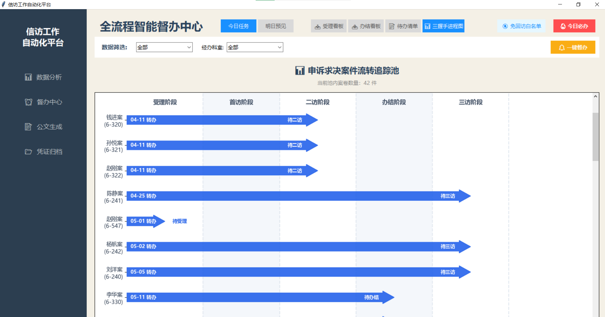
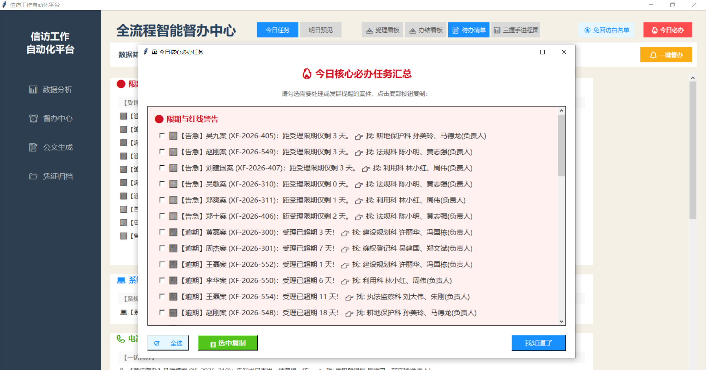
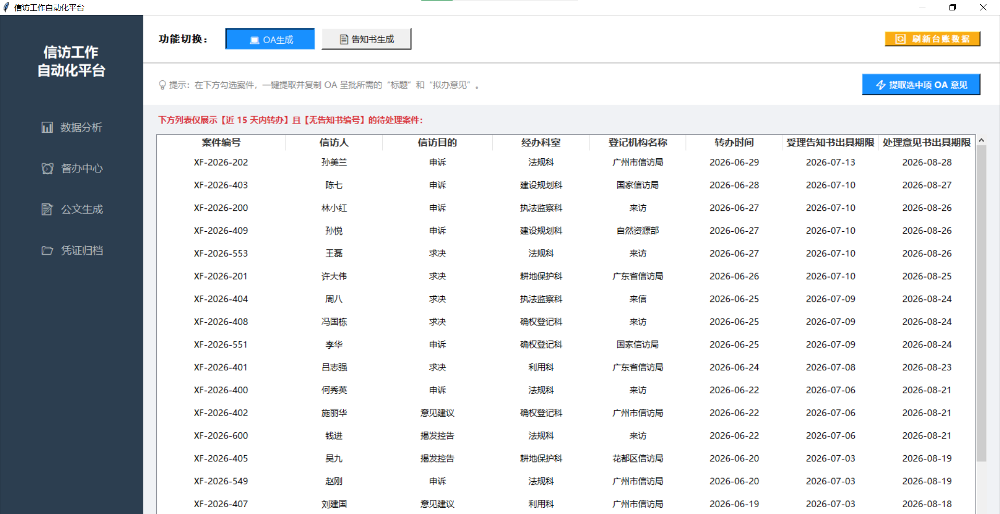
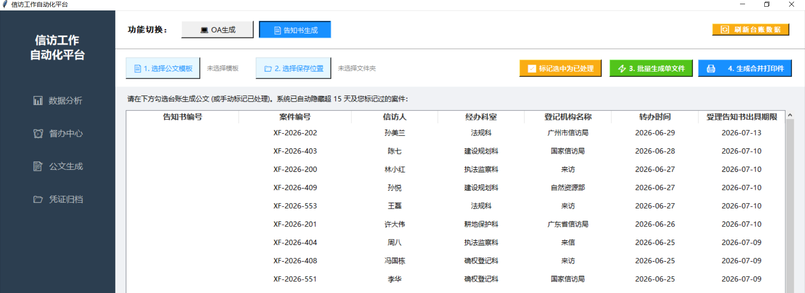

面向规划和自然资源系统 · 全流程信访案件管理一体化解决方案
基于 Pandas 实时聚合引擎，年/季/月三维筛选 + 环比同比计算，4个分析视图一键切换。

4张KPI卡片（总数/待办/临期/办结率）实时刷新；左侧12天/12月收件趋势折线图可一键切换粒度；右侧双条形图展示经办科室和来文单位Top 5。替换了原来手工筛选、透视、做图的工作流程。

Squarify树状图直观展示各科室占比结构；趋势折线图支持3条独立对比曲线（可自由选择科室）；台账含排名、案件量、占比、平均办案时长、环比增减。年/季/月独立筛选，全景图表页支持300dpi高清导出直接用于PPT汇报。

系统自动筛选≥2次的重复信访人，≥3次标红预警。左侧环形图展示信访目的构成（申诉/求决/意见建议/揭发控告），右侧台账记录申诉频次、最新诉求、初次与最近收件日期。支持年/季/月+诉求类型组合筛选。

选择统计年份、报表类型（月报/季报）、统计周期后，系统自动计算各来源单位与科室的案件量、占比、环比增减，拼接为格式化中文文段。可直接复制到OA呈批或Word月度报告中。将原来手工统计+撰写的10分钟压缩到30秒。
独创四维督办体系：待办清单引擎实时扫描60+案件，自动生成4大类、多层级督办事由，关联责任科室与经办人，配合一键督办公文实现从发现到通知的完整闭环。

引擎实时扫描全量数据，自动生成4类督办事由：🔴限期红线（受理/办结超期及临期）、💻系统操作（告知书/复函寄出后需进系统点击受理或办结）、📞电话回访（一访/二访/三访各阶段提醒）、📄文书归档（呈批+归档到期）。每条任务自动关联责任科室+经办人+科室负责人，可直接用于群内@督办。

专为申诉求决类案件设计的五阶段甘特图（受理→首访→二访→办结→三访），以深蓝色同色系箭头表示每个案件当前所处阶段。自动过滤不予受理、撤案、免回访和已归档案件。Matplotlib纯代码绘制，支持滑轨无缝滚动，鼠标滚轮仅在图表区域生效。

从待办清单引擎中提取逾期和高优先级任务，按四类分组展示。每条任务可独立勾选，支持全选/单选。复制时自动去除内部人员信息（经办人/负责人）、emoji符号和分类方括号，输出纯净文本可直接粘贴到微信/政务群。点击"我知道了"一键关闭。
基于可配置话术模板和 DocxTemplate 引擎，将单件OA拟办从10分钟压缩至30秒。

选中案件后一键弹出。标题根据来文类型（来信/来访/交办）和办结期限自动拼接；拟办意见根据登记机构类型自动匹配三段式话术模板（上级交办 / 一体化申诉求决 / 一体化其他）并填入{科室}{期限}{领导}等占位符。

docxtpl引擎将案件数据渲染到标准Word模板，一键批量生成独立文件（以告知书编号命名）；另支持将多份告知书内存合并为一个打印包，保持原始排版，适配一键双面打印。已处理案件自动隐藏。
| 技术点 | 实现方式 |
|---|---|
| 中文乱码根治 | 动态检测系统可用中文字体 → 构建font.fallback优先级列表 → Matplotlib全局注入，根治Windows/Linux中文豆腐块问题 |
| 话术模板配置化 | ini风格TXT文件管理三段式OA模板，{dept}{acc_date}{due_date}{leader_str}占位符自动替换，用户可无代码修改 |
| 智能领导称谓 | 规则引擎：骆卫国→骆总，张[某]明→张局，王[某]国→王处，自动拼接为"骆总、王处"格式 |
| 待办清单引擎 | 无状态函数设计，同一引擎同时驱动"督办中心待办清单""今日必办弹窗""一键督办公文"三处调用 |
| 甘特图纯净渲染 | FancyArrow + 同色系五阶段 + 自动过滤豁免案件 + 动态画布高度(0.7英寸/行) + 滚轮事件Enter/Leave智能绑定 |
| 多线程异步 | 公文生成/图片归档均使用daemon线程 + self.after回调，防止GUI冻结，进度实时回显按钮文字 |
| 路径记忆引擎 | last_path_config.txt持久化上次使用的文件夹，跨会话记忆，减少重复导航 |
| 环节 | 传统方式 | 本系统 | 提升 |
|---|---|---|---|
| 数据统计 | 手工Excel筛选透视，~10分钟/次 | 导入即出图，实时切换4个分析视图 | 效率提升 10× |
| 期限监控 | 人工记忆+日历，容易遗漏 | 7天/14天双看板+4类督办事由+一键督办公文 | 系统自动预警，杜绝遗漏 |
| 公文拟办 | 逐件手写，约10分钟/件 | 一键提取标题+拟办意见，30秒/件 | 效率提升 20× |
| 回访跟踪 | 手工记录，回访节点容易遗漏 | 甘特图可视化+自动回访提醒 | 流程化追踪，确保合规 |
| 月度报告 | 手动统计+写稿，约10分钟 | 参数化一键导出完整文字文段 | 10分钟 → 30秒 |